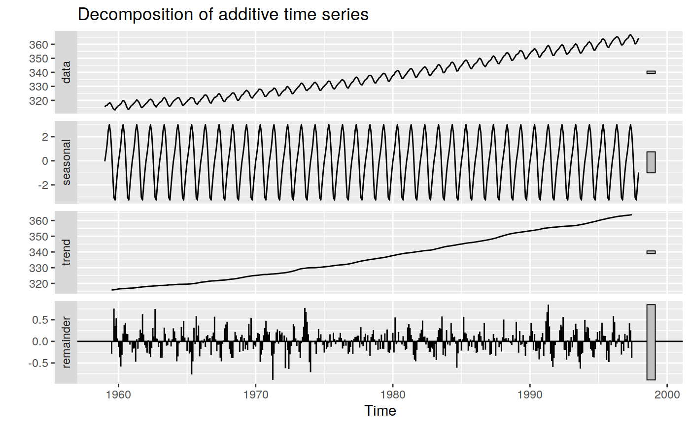
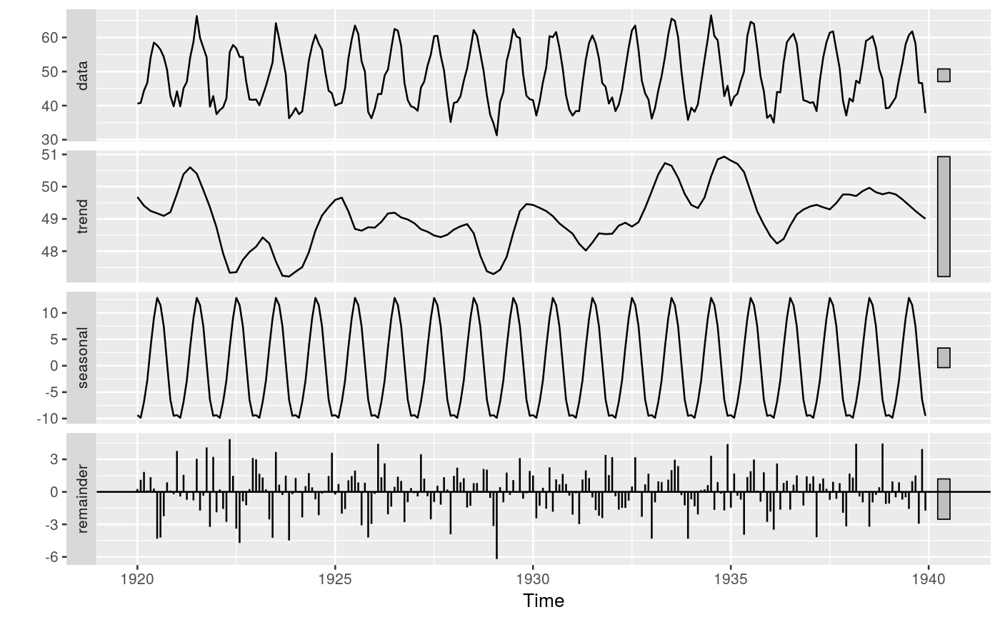

R/ggplot.R, R/mstl.R
autoplot.seas.RdProduces a ggplot object of seasonally decomposed time series for objects of
class “stl” (created with stl), class
“seas” (created with seas), or class
“decomposed.ts” (created with decompose).
# S3 method for decomposed.ts autoplot(object, labels = NULL, range.bars = NULL, ...) # S3 method for stl autoplot(object, labels = NULL, range.bars = TRUE, ...) # S3 method for StructTS autoplot(object, labels = NULL, range.bars = TRUE, ...) # S3 method for seas autoplot(object, labels = NULL, range.bars = NULL, ...) # S3 method for mstl autoplot(object, ...)
| object | Object of class “ |
|---|---|
| labels | Labels to replace “seasonal”, “trend”, and “remainder”. |
| range.bars | Logical indicating if each plot should have a bar at its
right side representing relative size. If |
| ... | Other plotting parameters to affect the plot. |
Returns an object of class ggplot.
# NOT RUN { library(seasonal) seas(USAccDeaths) %>% autoplot # }